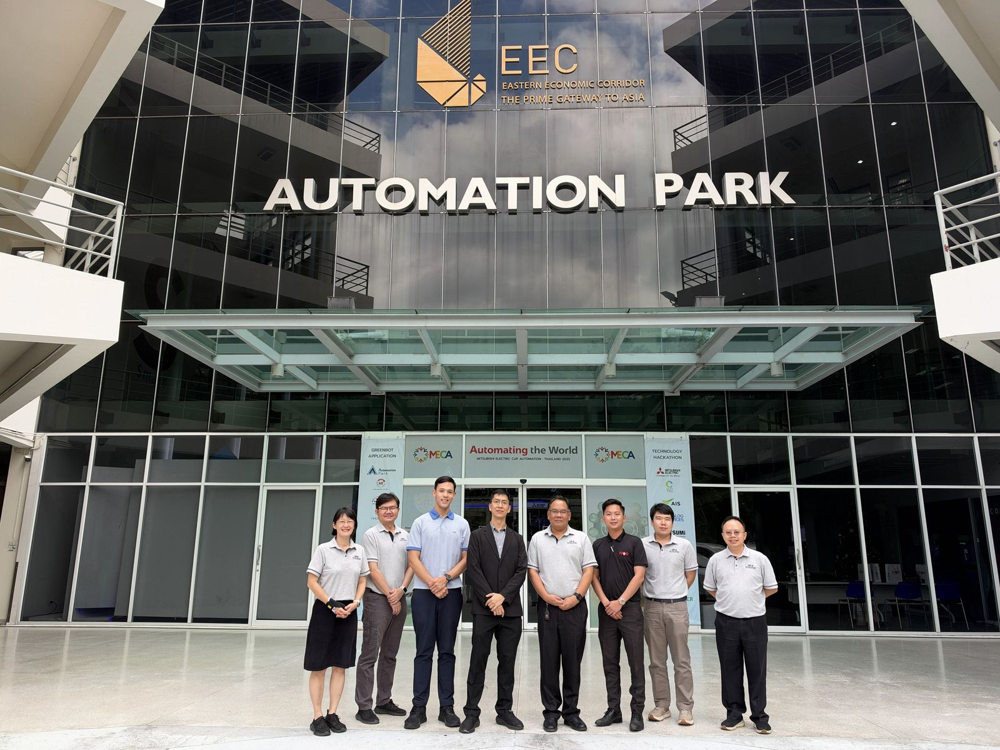
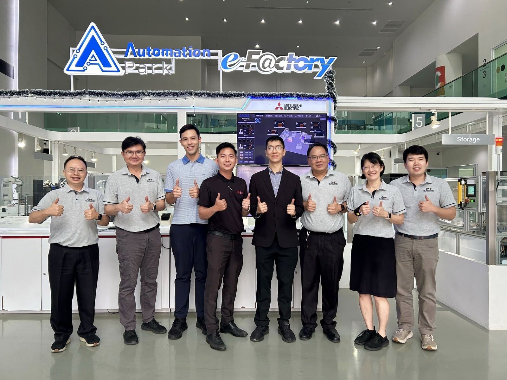

12 Nov 2026 · Chonburi
Mongbotics visits Burapha University and EEC Automation Park in Thailand
On 12 November 2026, the Mongbotics team visited the Faculty of Engineering at Burapha University (BUU) in Thailand, including the EEC Automation Park, located within the faculty.
During the visit, the team held discussions with representatives from Burapha University and EEC Automation Park, gaining insights into Thailand’s ongoing developments in robotics, industrial automation, and smart manufacturing. The visit also provided an opportunity to exchange perspectives on the evolving technology landscape and explore potential areas of collaboration.
About Burapha University (BUU)
Burapha University, located in Chonburi Province, is a leading public university in eastern Thailand, offering a broad range of academic programs across disciplines such as engineering, science, medicine, and social sciences.
The university is committed to advancing higher education, academic research, technological innovation, and professional talent development. It also plays an important role in supporting regional education, research, and industrial development.
About EEC Automation Park
Located within the Faculty of Engineering at Burapha University, EEC Automation Park was established through a joint initiative between the university and Mitsubishi Electric Factory Automation (Thailand). It serves as a technology learning, demonstration, and workforce development center supporting the industrial advancement of Thailand’s Eastern Economic Corridor (EEC).
The center focuses on Industry 4.0 technologies, including industrial automation, robotics, smart manufacturing, automated production systems, and digital manufacturing.
Through technology demonstrations, hands-on training, and professional skills development, EEC Automation Park helps strengthen industrial capabilities and accelerate the adoption of advanced automation technologies in Thailand.
Thank you
A heartfelt thank you to the Faculty of Engineering, Burapha University, and the EEC Automation Park team for the warm welcome and for taking the time to meet with our team.
We look forward to maintaining positive engagement and exploring potential opportunities for future collaboration.
See the post on Instagram
